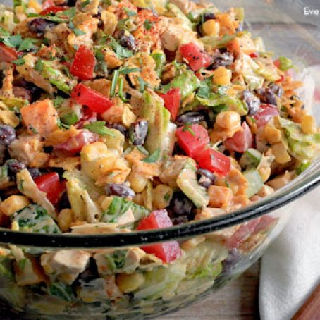

Back to the main page
Tex Mex Chicken Salad

Description
This main dish Tex-Mex inspired salad makes a family-friend supper that is teaming with texture and flavor. Crunchy vegetables and sweet corn pair with a tangy, cilantro-flecked dressing.
It is tossed with chicken thighs dredged in old-school taco seasoning mix and cooked in a hot skillet. Crunchy tortilla chips and salty Cotija cheese help the whole thing come together.
It is a crowd-pleasing dish that runs on the lighter side, a perfect warm weather meal.
Ingredients
For the salad
- 6 cups romaine lettuce, chopped and packed
- 1 medium red pepper, diced
- 1 cup English or Persian cucumber, diced
- 1 cup cherry tomatoes, halved
- 1 tablespoon plus 1 teaspoon extra virgin olive oil
- 1 1/2 cups fresh corn kernels (2 medium ears) or frozen and thawed
- 3/4 teaspoon kosher salt, divided
- 1 pound boneless skinless chicken thighs
- 1 tablespoon taco seasoning mix
- 12 corn tortilla chips
- 1/4 cup crumbled Cotija cheese
For the dressing
- 1 tablespoon lime juice
- 1 tablespoon white wine vinegar
- 1/2 teaspoon honey
- 1/2 teaspoon cumin
- 1/2 teaspoon kosher salt
- 1/4 teaspoon black pepper
- 1/2 cup cilantro leaves, lightly packed
- 1/4 cup extra virgin olive oil
Method
- Combine salad ingredients:
Combine the lettuce, red pepper, cucumber, tomatoes, and scallions in a large serving bowl. Set aside.
- Char the corn:
Heat 1 teaspoon olive oil in a medium or large heavy-bottomed skillet over high heat. When the oil is hot, add the corn.
Season corn with 1/4 teaspoon salt and cook, stirring occasionally, until blackened in spots and tender, about 3 minutes. Transfer to a plate.
- Season the chicken:
Sprinkle the taco seasoning and 1/2 teaspoon salt over the surface of the chicken, rubbing it in and coating so chicken is fully seasoned.
- Cook the chicken:
In the same skillet used to cook the corn add 1 tablespoon of olive oil and set over medium-high heat. When the oil is hot, add the chicken and cook until deeply brown along the bottom and the flesh turns opaque about halfway up the side, 4 to 5 minutes.
Flip the chicken and continue cooking, until brown on the second side and fully cooked through, another 3 to 5 minutes.
- Cut the chicken:
Transfer the cooked chicken to a cutting board. Once it is cool enough to handle, cut into bite-sized pieces.
- Make the salad dressing:
Place the lime juice, vinegar, honey, cumin, salt, pepper, cilantro, and olive oil into a blender and blend until smooth. Add 1 tablespoon of water, if needed, to get the blender going.
Alternatively, make this dressing by hand. Finely chop the cilantro and place in a medium bowl. Combine all salad dressing ingredients and whisk until smooth.
- Finish and serve the salad:
Add the corn and chicken into the bowl with the salad ingredients. Crumble the tortilla chips over the top.
Add about two-thirds of the dressing and toss to lightly coat. Add more dressing and toss again, if needed. Divide salad into 4 bowls, top with crumbled Cotija cheese, and serve.